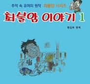
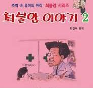
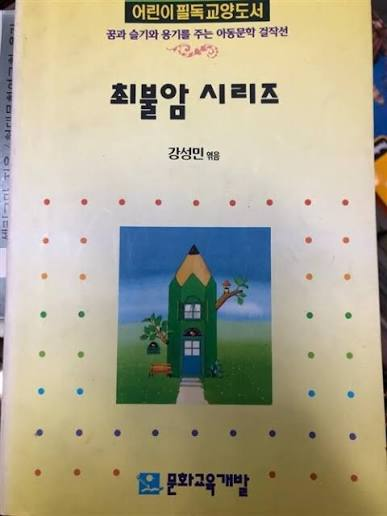
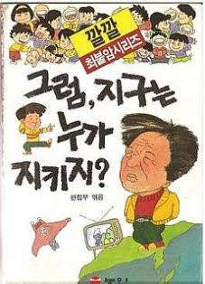
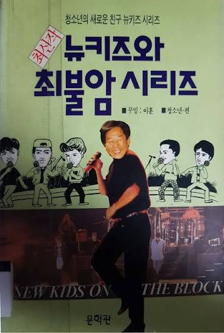
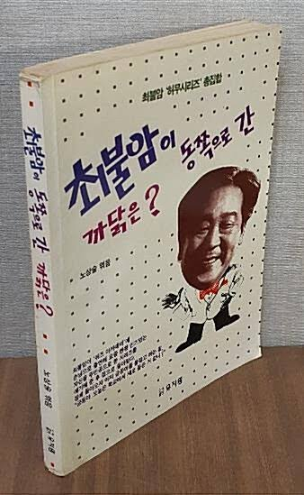
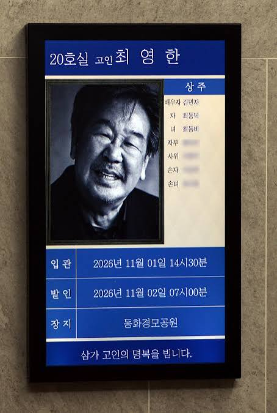

선생님... 평안하시길...







선생님... 평안하시길...
석이형님 여기서 이러시면..
버스 강도 역에 아저씨가 성함이 양택조 시던가
낯이 익은데 기억이 잘 안나네
맞음
수사반장 크 간지
본명이 아니셨구나 이제알았다
송해 이순재 김수미 최불암... 나무위키 떠돌다가 노년 배우들 전부 사망한거 다시 확인하게 되면 새삼 좀 충격적임
최불암은 왜 유명한거야??
드라마로 시청률 70프로 찍음
한국 최장수 드라마에도 출연
한국미디어역사상 레전드작품들 많이찍음
연기를 잘하셔서 뜬거야?
아님 다작으로 활동 많이 하셔서 뜬거야?
배우인데 유행어도 있음
태초에 전원일기가 있었다...
검색을 좀 쳐해봐라
검색보단 로컬팬들이 더 정확히 알려주지 않을까?
시대가 저물어갑니다
내 나이드는걱보다 나이많은 배우들 노환으로 가실때마다 세월가는게 더 진하게 느껴진다
버스강도 아저씨 어느새 동료되서 같이 있네
영화보러 에서 웃겻다 ㅋ
ㅠㅠ
파~~ 최불암 시리즈 잊지못하지..
확실히 2000년이후 태어난애들은 최불암씨를 잘모를수잇겠네
알긴아는데 이제 맛있는거 먹는 할아버지
특히 육회
최불암 시리즈가 단순 유머책인줄 알았는데 어제 첨으로 드라마가 원조라는걸 알았음 ㅋㅋㅋㅋ
아 람보랑 터미네이터가 나와야 진짜 최불암 시리즌데
파아~
어렸을때 집에 최불암 시리즈 있어서 대충은 알고 있었는데 이게 티비 내용이었어? 나는 그냥 최불암선생님 이름으로 설정해놓고 그냥 아무나 다 본인 유머집에 최불암시리즈 붙이는 잡문집 인줄 알았는데
그런 유머가 맞고
그 중에 몇 개를 직접 찍은 거임
ㄹㅇ 나도 왜 아재개그하면 최불암시리즈라 하는지 몰랐는데 드라마로 유행탄거구나
ㄴㄴ 그냥 이것저것 널려있던 유머들을 최불암시리즈로 묶은거에 가까움. 그게 유행하고 나서 직접 몇가지 유머를 영상화 한거임 나중에.
ㅇㅎ
아 본명이 최불암이 아니였구만..
불암 콩콩 코믹스
조석 이전에 최불암이 있었다